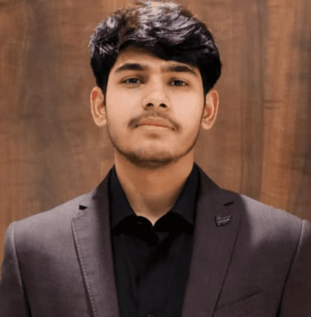

Entrepreneurship
Understanding problems, exploring opportunities and turning ideas into useful solutions.
HELLO, I'M
BBA DBE Student · Aspiring Entrepreneur
I’m interested in the space where business, marketing and technology come together. I enjoy learning, solving problems and exploring ideas that can create real value.

01 / ABOUT
I’m Nitish, a first-year BBA student in the Digital Business & Entrepreneurship programme at IIM Bangalore. I’m ambitious, growth-oriented and motivated by the idea of creating something meaningful.
I value clear communication, practical problem-solving and learning through new experiences. Participating in Model United Nations (MUNs) and the Round Square International Conference has helped me explore different perspectives and build confidence.
02 / EDUCATION
CURRENTLY PURSUING
Indian Institute of Management Bangalore (IIMB)
First-year student
03 / WHAT I'M INTERESTED IN
Understanding problems, exploring opportunities and turning ideas into useful solutions.
Learning how brands connect with people through strategy, creativity and communication.
Exploring digital tools and how technology can improve the way businesses work.
04 / PERSONAL HIGHLIGHTS
Participation in Model United Nations (MUNs)
Participation in the Round Square International Conference
Communication and problem-solving
05 / CONTACT
Have an interesting idea, opportunity or simply want to connect? Feel free to reach out.
nitishkumarrcm4@gmail.com GitHub profile ↗